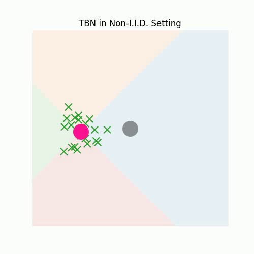
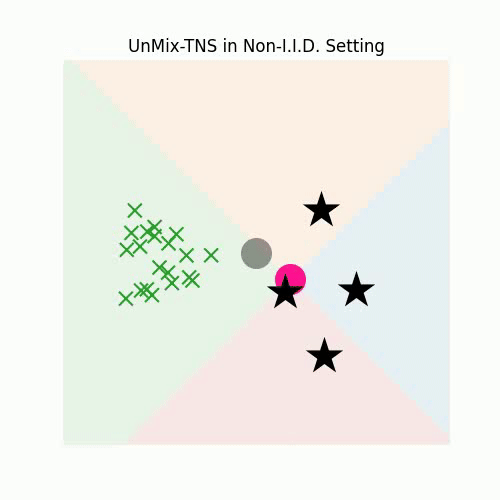
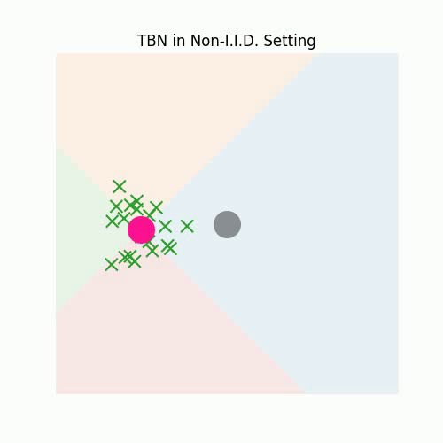
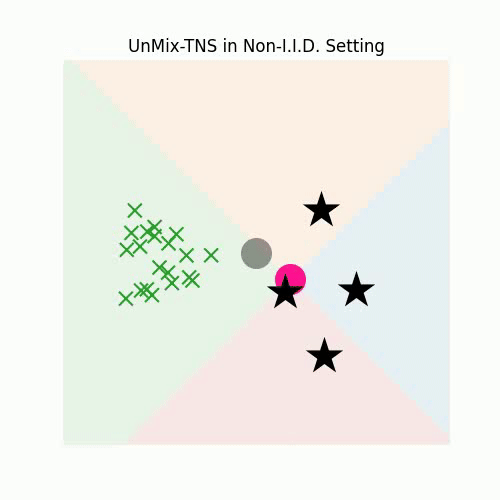

1. Distribution of \(K\) UnMix-TNS Components Mixture
Let \( [\mu_1^t, \dots, \mu_K^t] \) and \( [\sigma_1^t, \dots, \sigma_K^t] \) denote the statistics of the \( K \) components within the UnMix-TNS layer at a given temporal instance \( t \), where each \( \mu_k^t, \sigma_k^t \in \mathbb{R}^C \). We articulate the distribution \( h_Z^t(z) \) of instance-wise test features \( z \in \mathbb{R}^C \) marginalized over all labels at a temporal instance \( t \) using the \( K \) components:
\[ h_{Z_c}^t(z_c) = \frac{1}{K}\sum_k \mathcal{N}(\mu_{k,c}^t, \sigma_{k,c}^t), \]
where \( \mathcal{N} \) represents the Normal distribution function. Given only \( (\mu_k^t, \sigma_k^t)_{k=1}^{K} \), one can derive the label unbiased normalization test statistics \( (\bar{\mu}^t, \bar{\sigma}^t) \) at time \( t \) as follows:
\[ \bar{\mu}^t = \mathbb{E}_{h_{Z_c}^t}[z_c]=\frac{1}{K}\sum_k \mu_{k,c}^t, \]
\[ (\bar{\sigma}^t)^2 = \mathbb{E}_{h_{Z_c}^t}[(z_c-\bar{\mu}^t)^2]=\frac{1}{K}\sum_k (\sigma_{k,c}^t)^2 + \frac{1}{K}\sum_k (\mu_{k,c}^t)^2 - \Big(\frac{1}{K}\sum_k\mu_{k,c}^t\Big)^2, \]
Subsequent sections will delve into the initialization scheme for the \( K \) UnMix-TNS components and elucidate the process of updating their individual statistics \( (\mu_k^t, \sigma_k^t) \) at temporal instance \( t \).